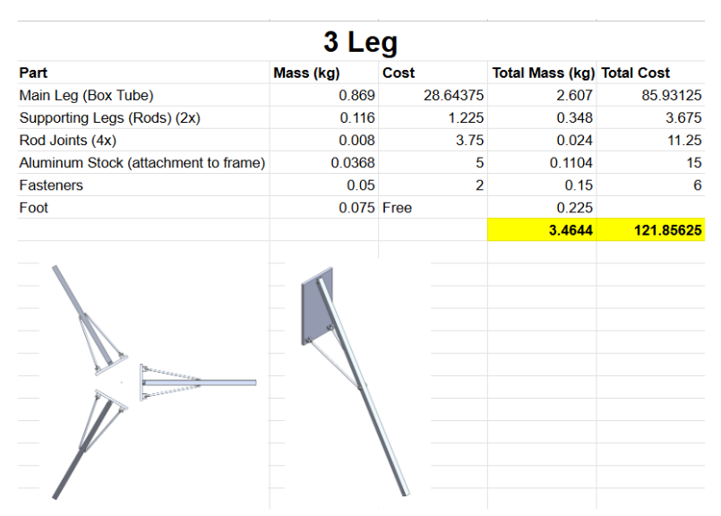
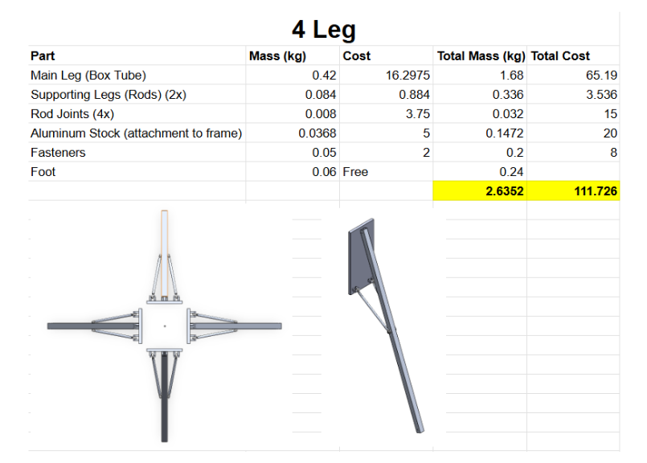
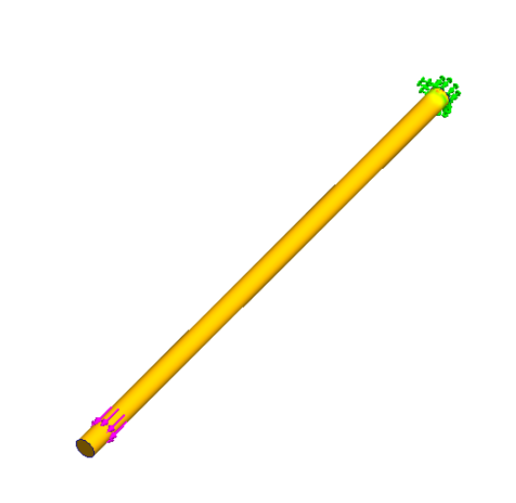
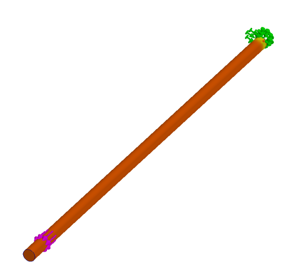
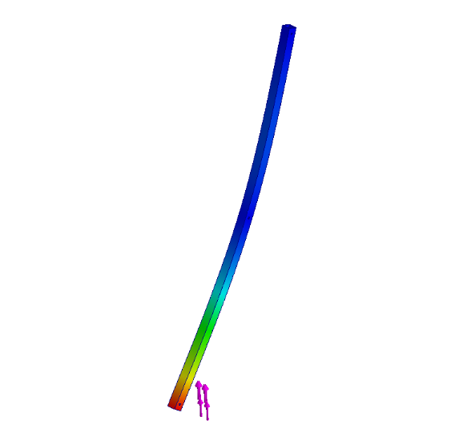
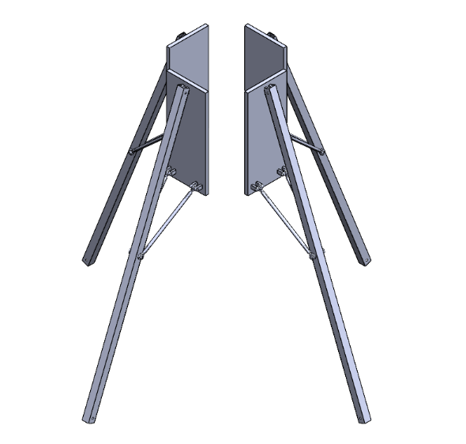

1000N ROCKET FIXEDLANDING GEAR
This project develops a fixed landing gear system for a 1000 N lander rocket built by the Georgia Tech Propulsive Landers team. The lander serves as the team's primary Lander's Challenge vehicle, chosen to keep the program within realistic budget and complexity limits before moving on to future rockets that will incorporate retractable landing gear and more advanced mechanisms. Working within strict schedule, mass, and cost constraints, the design emphasizes high practicality by relying almost entirely on off-the-shelf aluminum stock components with minimal custom machining.
Two complete architectures- a three-leg configuration and a four-leg configuration- were developed in SolidWorks, each tuned to meet identical radial footprint and landing load requirements. Member lengths, wall thicknesses, and joint geometries were iteratively adjusted to ensure both designs satisfied the same structural envelope, enabling a fair comparison between the two options. The CAD workflow included detailed interface modeling, realistic joint constraints, and manufacturing-accurate part definitions based on available aluminum tubing profiles.
Structural performance was evaluated using SolidWorks FEA, focusing on touchdown load paths, local bending behavior, and stress concentrations at tube junctions. Each configuration was analyzed under identical loading conditions to quantify differences in stiffness, peak stress, and safety margin. A parallel BOM-driven cost and mass model captured the impact of part count, tubing dimensions, and hardware selection, allowing the two architectures to be compared not only structurally but also in terms of manufacturability and resource efficiency.
The combined analysis showed that the four‑leg configuration offered the best overall performance: it was lighter, cheaper, and distributed touchdown loads more evenly than the three‑leg alternative, making it the preferred solution for the 1000 N lander.
With the design finalized, the landing gear has moved into fabrication. I worked in the machine shop cutting aluminum stock, tapping hardware interfaces, and turning parts on the lathe as the structure came together. The system is now being manufactured and will be fully completed soon, marking the transition from analysis and CAD development to a flight‑ready, physical assembly.





